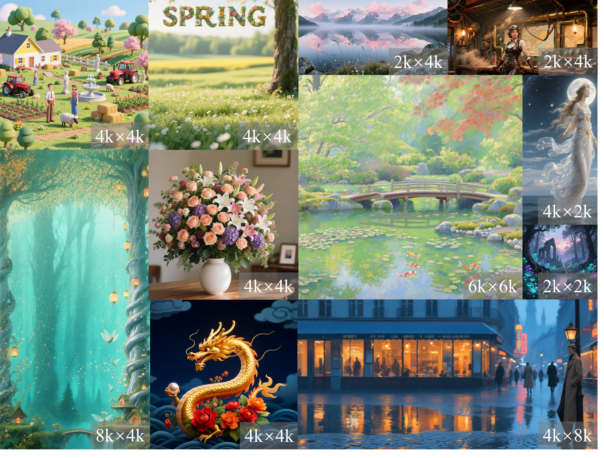
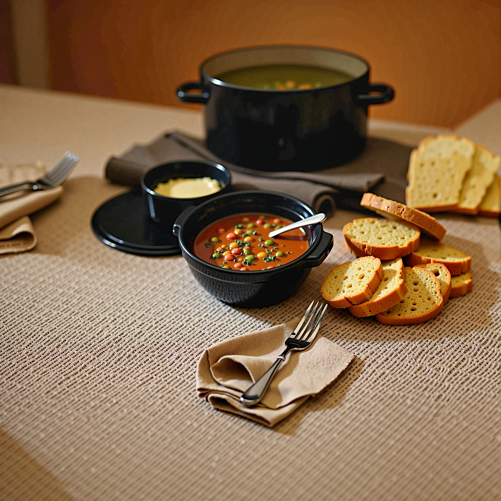
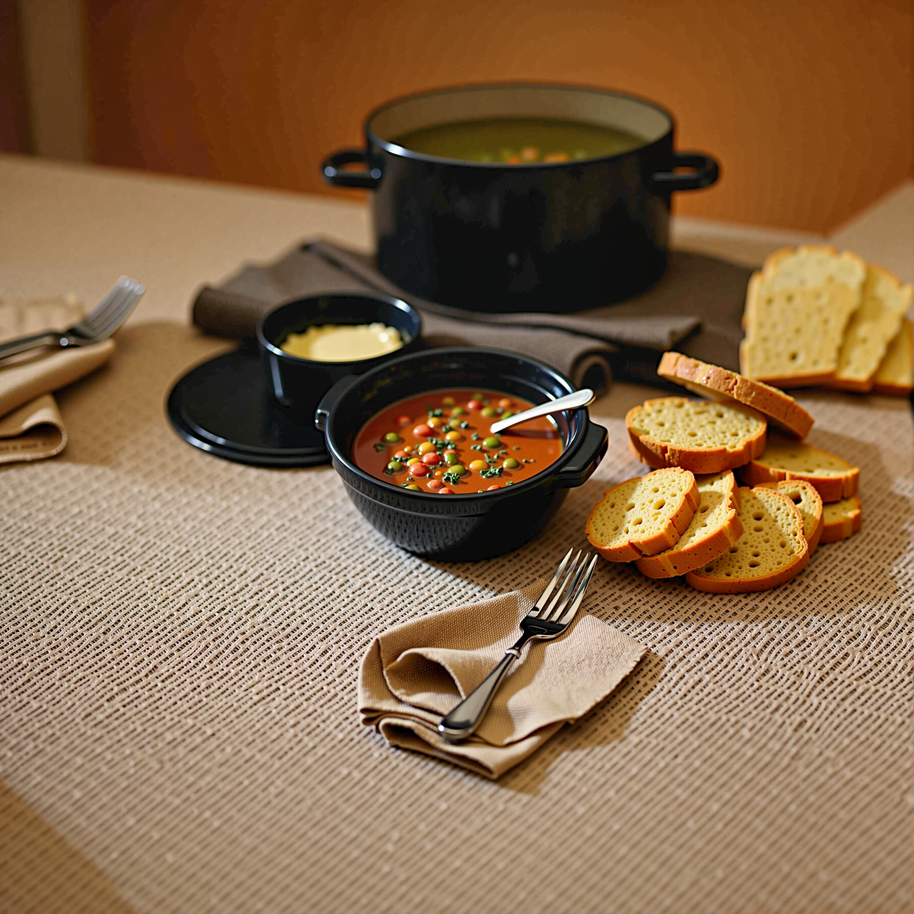

✨UltraImage: Rethinking Resolution Extrapolation in
Image Diffusion Transformers

.jpg)
.jpg)
.jpg)
.jpg)
.jpg)
.jpg)
.jpg)
.jpg)
.jpg)
.jpg)
.jpg)
.png)
.png) 

Recent image diffusion transformers can generate high-fidelity images, but their ability to extrapolate beyond the training resolution is fundamentally limited. When scaling to higher resolutions, models often exhibit structure-level repetition and quality degradation, making them unable to synthesize coherent ultra-resolution images. These failure modes indicate gaps in our understanding of how positional embeddings and attention behaviors behave under extreme spatial extrapolation.
Through a frequency-wise analysis of positional embeddings, we identify that content repetition arises from the periodicity of the dominant frequency, whose natural period coincides with the training resolution. Extrapolating beyond this range forces the model outside the original frequency cycle, inevitably producing repeated structures. In parallel, we find that quality degradation emerges from diluted attention at large token counts: local details become blurry due to overly diffuse attention, while global patterns lose structural consistency when attention becomes excessively concentrated.
Building on these findings, we propose UltraImage, a principled framework for ultra-resolution extrapolation without additional training data.
Together, these components enable UltraImage to robustly extend image resolution far beyond the training scale, achieving consistent improvements over prior approaches and supporting generation up to 6K × 6K from only 1328p training data.
If you find this work helpful, please cite the following paper:
@article{zhao2025UltraImage,
title={UltraImage: Rethinking Resolution Extrapolation in Image Diffusion Transformers},
author={Zhao, Min and Yan, Bokai and Xue, Yang and Zhu, Hongzhou and Zhang, Jintao and Liu, Shilong and Li, Chongxuan and Zhu, Jun},
journal={},
year={}
}
Project page template is borrowed from HiFlow.